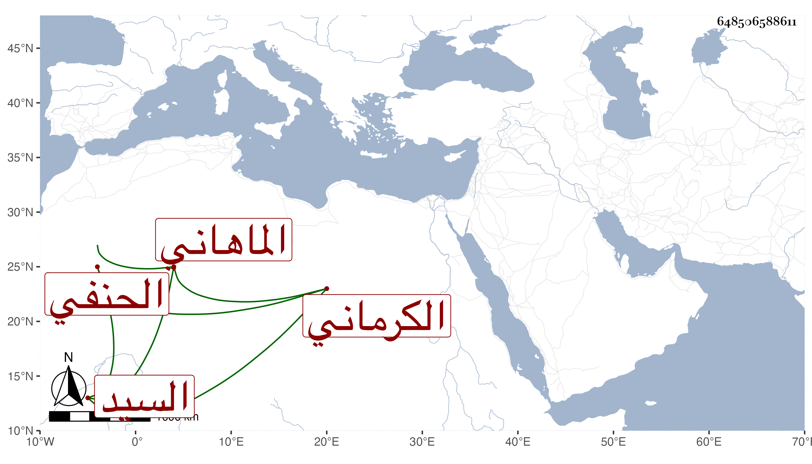

0902Sakhawi.DawLamic.ITO20230111-ara1.EIS1600.648506588611
Biography ID: 648506588611
861
نعمة الله بن عبد الله بن محمد السيد الماهاني الكرماني وماهان من عواليها الحنفي . تجرد وساح وحج قديما وأخذ عن اليافعي وغيره وارتقى إلى قدم عظيم في العبادة وصار له مريدون وأتباع وجلس بزاويته بماهان فتسلك به جماعة وصنف في التصوف نظما ونثرا ، وذكرت له كرامات وأحوال بحيث تزايد اعتقاد الناس فيه ومحبتهم إياه وارتفعت حرمته وتزايدت وجاهته ، كل ذلك مع كثرة تحجبه حتى لا يظهر لأصحابه إلا بعد العصر وإذا رأوه خروا بأجمعهم حتى تصل وجوههم إلى الأرض ثم رفعوا رءوسهم وقاموا بين يديه وهم منكسون وهو يتكلم معهم حتى يفرغ ولبس جماعته اللبابيد وكانت له كلمات بالعجمية لطيفة سجعا ونظما على طريق القوم فيها ما هو رقيق اللفظ والمعنى وللهنود والأعاجم فيه اعتقاد عظيم . مات بماهان سنة تسع وعشرين عن مائة وتسع سنين ، وهو في عقود المقريزي وإن أتباعه كانوا يجهرون بما لا يحتمله أهل الشرائع عفا الله عنه .
